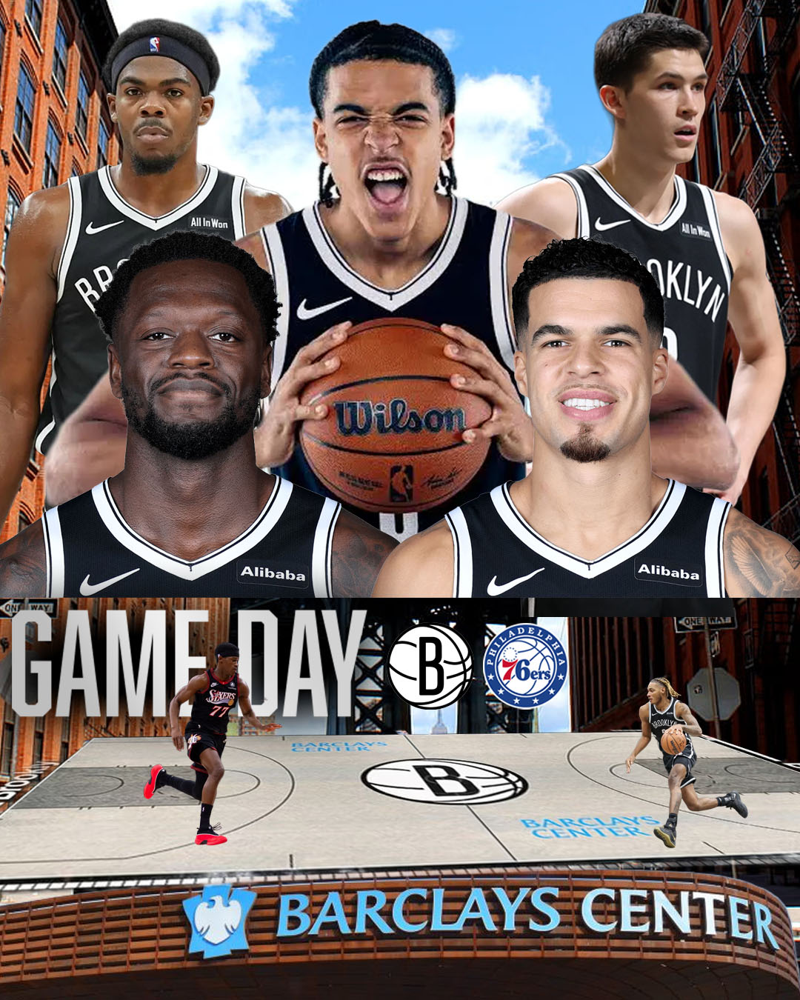

I've been a big fan of sports graphics. I like creating jersey swaps and gameday graphics. Coming off a decent season last year, The Brooklyn Nets acquired former Knicks star Julius Randle. With the new addition of Randle the fans started to have belief again, this prompted me to make a gameday graphic featuring the nets, my passion for sports graphics combined with the Nets on the rise gave me inspiration to make this. I had alot of fun getting creative with this, including adding players onto the court. I chose the sixers in the graphic because of their exciting new additions including LeBron James and Jaylen Brown.